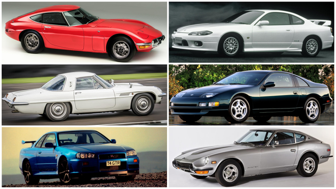

Los autos deportivos japoneses han capturado la atención del mundo por su combinación de ingeniería de vanguardia, diseño audaz y rendimiento excepcional.
Entre las marcas más destacadas se encuentran Nissan, Toyota, Mazda, Honda y Subaru. Estos fabricantes han creado vehículos icónicos que han dejado una huella imborrable en la industria automotriz.

Historia
La historia de los autos deportivos japoneses se remonta a las décadas de 1960 y 1970, cuando fabricantes como Nissan, Toyota y Honda comenzaron a desarrollar vehículos que no solo eran funcionales sino también emocionantes de conducir.
"Los modelos como el Toyota 2000GT y el Datsun 240Z revolucionaron la industria automotriz, poniendo a Japón en el mapa de los autos deportivos."
Los autos deportivos japoneses fueron influenciados por la industria estadounidense y europea, pero desarrollaron un estilo y tecnología propios que les permitieron destacarse.
1967: Lanzamiento del Toyota 2000GT
1969: Debut del Nissan Fairlady Z (Datsun 240Z)
1978: Introducción del Mazda RX-7
Modelos Icónicos
Nissan GT-R
Conocido como el "Godzilla" de los autos deportivos, el GT-R es famoso por su tracción integral y potencia inigualable.
Nissan GT-R en una carrera de alta velocidad.
Toyota Supra
El Supra es un símbolo de velocidad y rendimiento, conocido por su motor turboalimentado y su diseño aerodinámico.
Toyota Supra en exhibición.
Mazda MX-5 Miata
Este roadster ligero es famoso por su manejo ágil y su enfoque en la conducción pura.
Mazda MX-5 Miata en una carretera escénica.
Innovación
Los fabricantes japoneses han sido pioneros en la implementación de tecnologías avanzadas en sus autos deportivos, como la inyección electrónica y la tracción integral.
La combinación de tecnología y diseño ha permitido que estos vehículos no solo sean rápidos, sino también eficientes y confiables.
Curiosidades
Los autos deportivos japoneses no solo destacan por su rendimiento, sino también por su aparición en la cultura popular.
El Nissan Skyline GT-R fue popularizado por la saga de películas "Rápidos y Furiosos".
El Mazda RX-7 es conocido por su distintivo motor rotativo.
El Honda NSX fue desarrollado con la ayuda del legendario piloto Ayrton Senna.